Mi Biografia
Daniel Fernández González
Nacimiento y Crianza
Mi nombre es Daniel Fernandez Gonzalez, tengo 30 años y nací en Pereira el 27 de Noviembre de 1993, a la edad de 1 año aproximadamente mi padre debia mudarse a la ciudad de Medellin por lo cual todos lo hicimos.
Alli vivi 28 años de mi vida, donde hice mis estudios en general, tanto colegio como tambien universitarios, soy tecnico en mantenimiento de computadores y tecnico en mantenimiento de aeronaves.
Padres y Hermanas
| Papá | Mamá | Hermanas | ||
|---|---|---|---|---|
| Cesar Ferandnez 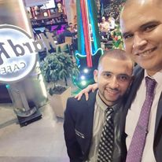 | Teresa Gonzalez

|
Stephanie Fernandez

|
Amalia Fernandez

|
Isabella Cardona

|
Colegio
Estudie siempre en el colegio la salle de Envigado, antes de eso estudie en el preescolar TUTI, donde hice pre-jardin, viví muchas experiencias en el colegio y a su vez conoci grandes amistades que por simple destino he ido perdiendo contacto al paso de los años.
Universidad
Mis estudios universitarios los hice en el SENA como tecnico en mantimiento de equipos de computo, y luego realice mi carrera tecnica de Mantenimiento de aeronaves en la escuela de aviacion Halcones, de donde me gradue y luego obtuve mi licencia de TMA.

Lugares Favoritos
- Punta Cana
- Medellin
- Pereira
- Aeropuertos
- Rio Negro 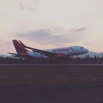 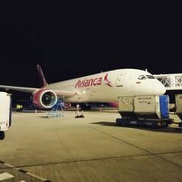
- Medellin 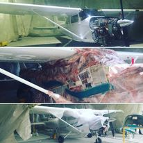 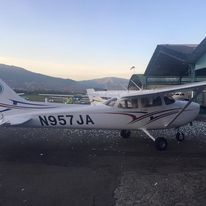
- Pereira 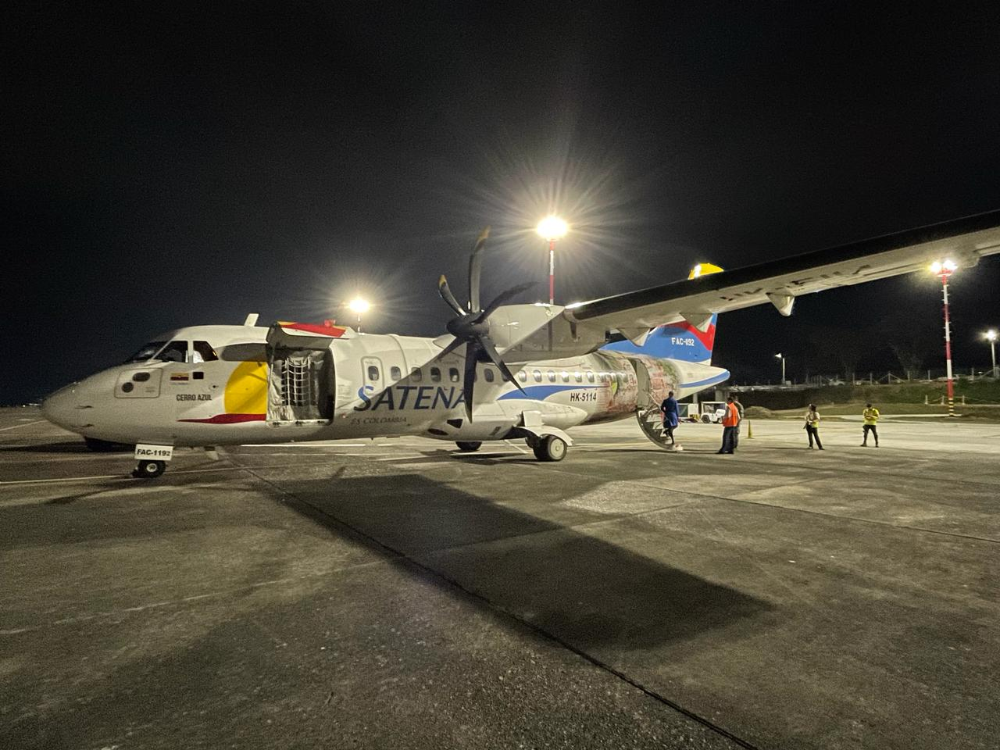
- Punta Cana 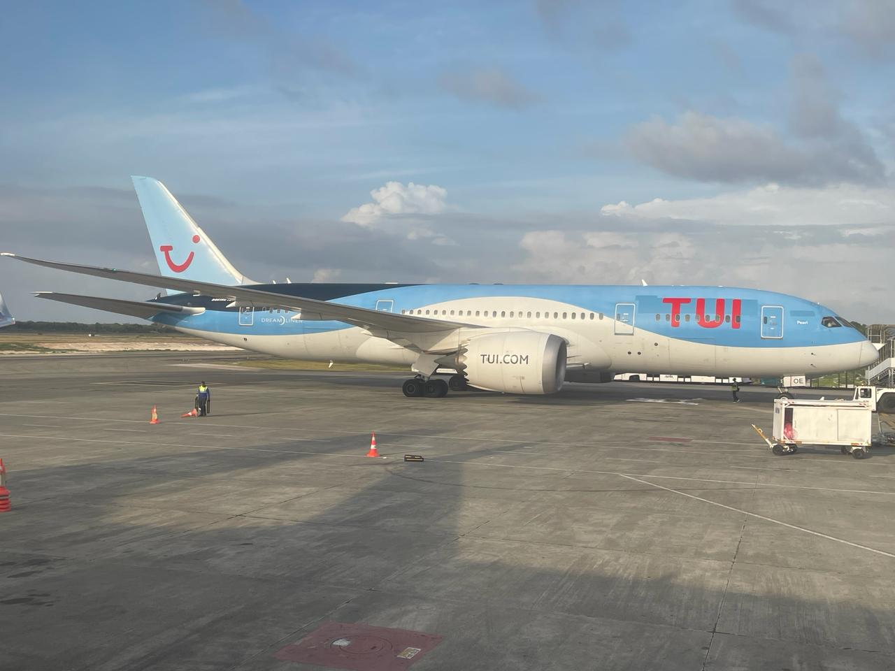
Ha sido el unico lugar al que he ido fuera del pais por lo pronto y fue una experiencia inolvidable, el mar con su claridad y la arena blanca y suave que hace este destino unico.
La ciudad que me vio crecer y hacerme un profesional, en la que he hecho mi historia, una ciudad con mucho para ofrecer a cualquier visitante o residente.
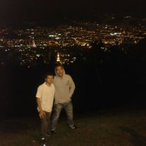La ciudad que me vio nacer, lugar de nacimiento de mis padres y mayoria de familiares, donde actualmente resido.
Para muchos es simplemente un edificio donde abordas un avion que te llevara a un destino, para mi la puerta a mi pasion y sueño mas grande, estos lugares siempre me generan paz y me aterrizan en momentos en lo que a veces siento que simplemente necesito detenerme y respirar.
Hobbies
Mi mas grande hobbie entre muchos otros es la cocina, sobre todo el BBQ, me gusta experimentar sabores y hacerlo para complacer a mis seres queridos, usualemnte soy el chef de eventos especiales en la casa
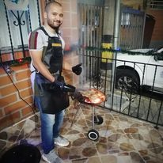Actualidad
En la actualidad trabajo como asistente virtual para empresas americanas, vivo con mi pareja que pronto sera mi esposa y junto a nuestra gata y perro, a su vez tengo otra mascota, una perra que deje en Medellin junto con mi madre, hermana y sobrina.
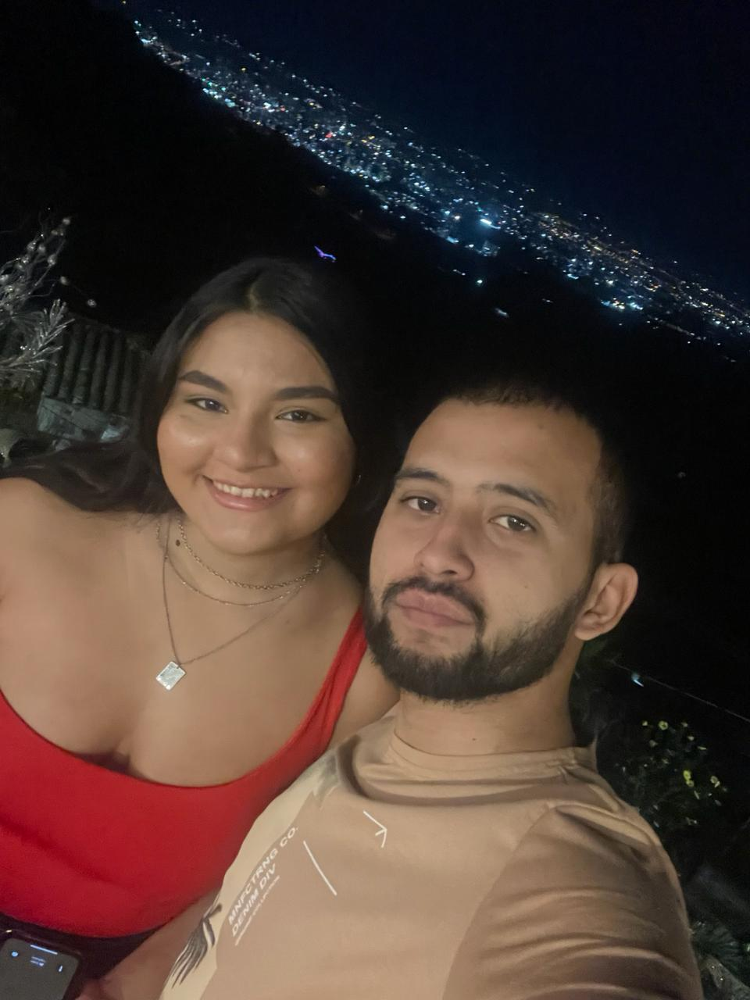| Luna | Maximo | Dana |
|---|---|---|
| 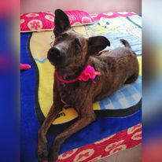 | 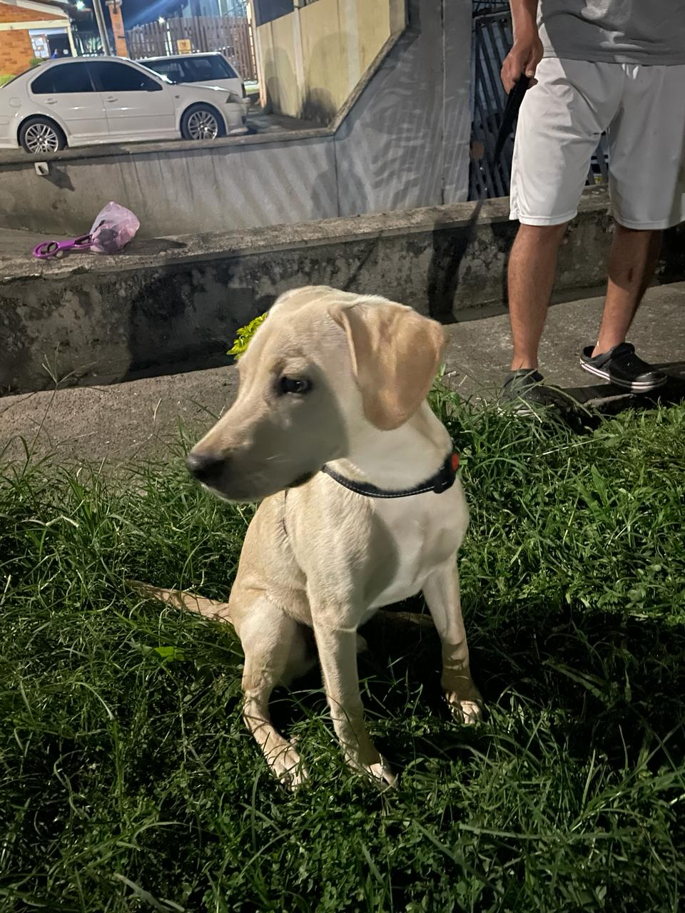 | 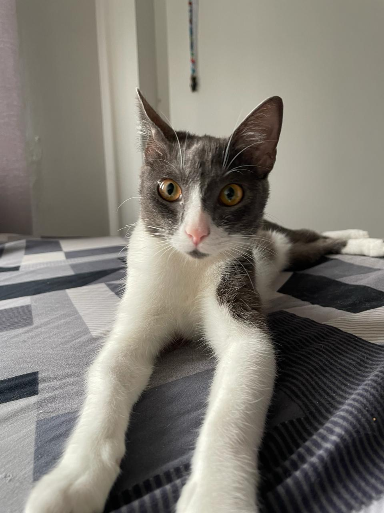 |